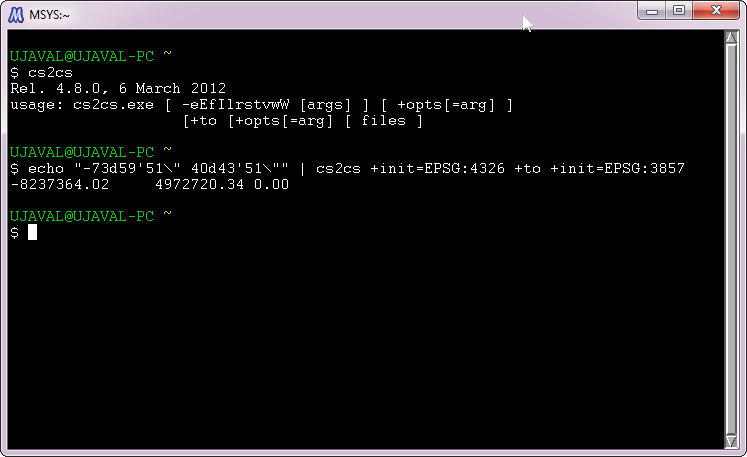
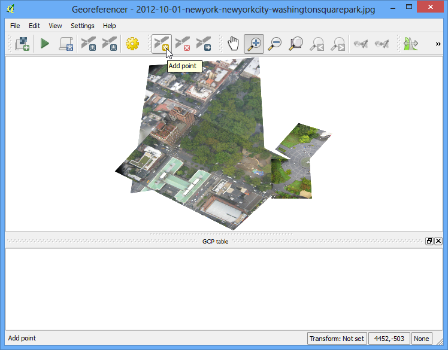

Image aérienne géoreferencee
[ Download PDF
A4
Letter ]
Dans le tutorial :doc:’georeferencing_basics’ nous avons aborde les principes de base du georeferencement dans QGIS. Cette méthode consiste a lire les coordonnées inscrites sur la carte scannée et a les reporter manuellement dans le logiciel. Cependant, dans beaucoup de cas les cartes utilisées ne contiennent pas de coordonnées spatiales. Dans ce cas, il faudra utiliser une autre source de données pour le georeferencement. Ce tutorial vous apprend comment utiliser les sources open data existantes pour mener a bien ce procédé de georeferencement.
Description de l’exercice
Nous allons georeferencer une image haute-resolution en s’appuyant sur les coordonnees d’OpenStreetMap.
Autres compétences abordées
Télécharger des images haute-résolution en accès libre.
Utiliser le plugin OpenLayer dans QGIS.
Utiliser la ligne de commande cs2cs pour transformer le système de coordonnées entre deux différentes projections.
Utiliser un calque georeference pour intégrer des point GCP dans l’outil de georeferencement.
Définir des valeurs sans donnes pour un calque.
Obtenir les données
Dans ce tutorial nous allons utiliser quelques magnifiques images issues de ‘The Public Laboratory <http://publiclaboratory.org/archive>`_. Les versions géolocalisees de leurs images sont aussi disponibles mais nous allons ici télécharger une image non localisée pour effectuer la manipulation dans QGIS. Si vous aimez les images utilisées, vous pouvez les retrouver également sur Google Earth <http://google-latlong.blogspot.in/2012/04/ balloon-and-kite-imagery-in-google.html>`_.
Téléchargez l’image JPG de ‘Washington Square Park, New York <http:// publiclaboratory.org/map/washington-square-park-new-york-new-york/2012-10-01>`_. Vous pouvez double-cliquer sur le bouton JPG puis sélectionner Save link as....
For convenience, you may directly download a copy of the dataset from the link
below:
newyorkcity-washingtonsquarepark.jpg
Procédure
Pour ce tutorial pour nous allons utiliser le calque OpenStreetMap en tant que calque de reference. Installez le plugin OpenLayers depuis . Voir Using Plugins pour plus d’informations sur l’utilisation des plgins QGIS.

Une fois le plugin installe, aller a :menuselection:`Plugins –> OpenLayers plugin –> Add OpenStreetMap layer’. Cela va ajouter un calque généré a partir de `OpenStreetMap data <http://www.openstreetmap.org/>`_.

Le calque OpenStreetMap est désormais charge sur QGIS. Remarquez le système de coordonnées de reference pour cette couche (SCR) : EPSG 3857 Pseudo Mercator. Il est important de le noter, en effet les coordonnées que nous allons déduire de ce calque seront exprimées dans le même système de coordonnées.

La prochaine étape sera de déterminer la position de la zone que nous essayons de géolocaliser. Vous pouvez vous servir des outils Pan et Zoom pour localiser la zone sur le calque OpenStreetMap.
Voici une autre méthode qui pourra vous etre utile : l’image téléchargée représente Washington Square Park a New-York, nous connaissons donc sa position. Il suffit de charger la page Wikipedia de cet endroit : les coordonnées géographiques y sont mentionnées.

Vous pouvez remarquer que les coordonnées sont exprimées en Degrés/Minutes/Secondes et Latitude/Longitude. Nous devons transformer ces unités pour obtenir des chiffres compatibles avec la projection Mercator.
Pour ce faire vous pourrez utiliser l’outil cs2cs. Cet outil est déjà installe dans votre système si vous avez installe QGIS avec OSGeo4W, ou bien si le logiciel tourne sous Linux ou Mac.
Si vous êtes sous Windows, ouvrez une fenêtre de commandes et tapez “cs2cs” pour vérifier si l’outil est disponible .

Maintenant que vous avez vérifie la présence de l’outil cs2cs dans votre système, il est temps de transformer ces chiffres en coordonnées Mercator. Afin d’utiliser l’outil cs2cs vous devrez spécifier un source et une destination SCR. La définition du SCR peut être un PROJ4 string ou un EPSG code. Nous allons nous appuyer ici sur le code ESPG que nous connaissons grâce aux données d’entree/sortie du SRC. Le moyen le plus simple est d’inscrire les coordonnes directement dans la ligne de commande. Les coordonnées doivent être inscrites selon l’ordre ‘X Y’, soit ‘Longitude Latitude’. Entrez la commande suivante dans la fenêtre puis appuyez sur Entrée. Il est possible de remplacer les guillemets (”) par un double (\). Après avoir valide avec Entrée, vous verrez apparaitre les coordonnes X Y en ESPG 3857 SRC.
echo "-73d59'51\" 40d43'51\"" | cs2cs +init=EPSG:4326 +to +init=EPSG:3857
-8237364.02 4972720.34 0.00

Copiez alors les coordonnées obtenues et revenez dans QGIS. Tout en bas de la fenêtre QGIS repérez le champ Coordonnées. Entrez-y les coordonnes au format X,Y et validez avec Entrée. Vous verrez alors la carte se déformer un peu. Pour zoomer, sélectionnez alors l’échelle 1:2500 dans la commande située juste a cote du champ de Coordonnées et validez avec Entrée.

Voila! Vous arrivez maintenant a visualiser Washington Square Park sur votre écran. Il faut maintenant géolocaliser l’image.
Lancer le Georeferencer depuis . Si vous ne voyez pas cette commande vous devrez l’activer en faisant Georeferencer GDAL plugin from .

Dans le menu Georeferencer window, go to . Retrouvez le fichier JPG enregistre et cliquez sur

Dans le Coordinate Reference System Selector, sélectionnez EPSG:3857 Pseudo Mercator

Maintenant cliquez sur Add Point dans la barre d’outils et choisissez un endroit de l’image facilement identifiable. Les coins, les intersections et les points sont a privilégier et constituent des bons points de contrôle.

Après avoir clique sur un point de l’image, vous verrez apparaitre une fenêtre vous demandant d’insérer les coordonnes de la carte. Appuyez alors sur From map canvas.

Repérez le même endroit sur la couche OpenStreetMap et cliquez dessus. Les coordonnées sont alors generees automatiquement. Procédez de la même façon pour 4 autres points de l’image en ajoutant leurs coordonnées depuis le calque de reference.

Allez maintenant dans

Choissisez les options comme suit. Vérifiez que le bouton Load in QGIS when done est bien sélectionne. Cliquez sur OK. Retournez alors dans la fenêtre Georeferencer puis allez a . Cela va enclencher le processus de redressement de l’image et créer un nouveau raster.

Une fois le processus termine, vous verrez apparaitre dans QGIS la nouvelle couche géolocalisee. Si tout a bien fonctionne, la couche devrait se superposer parfaitement au calque OpenStreetMap.

Pour ameliorer le rendu, vous pouvez enlever les valeurs no-data en noir et blanc. Clique-droit sur le calque de l’image puis Properties.

Allez a l’onglet Transparency. Nous voulons faire en sorte que tous les pixels noirs et blancs de l’image deviennent transparents.
Entrez 0 dans No data value. Aussi, dans Custom transparency options, cliquez sur le bouton + et ajoutez 255 aux pixels transparents pour chaque couche, ensuite indiquez 100 dans Percent transparent. Validez avec OK.

Votre image est maintenant parfaitement superposée a la couche de base.

{kind=link}